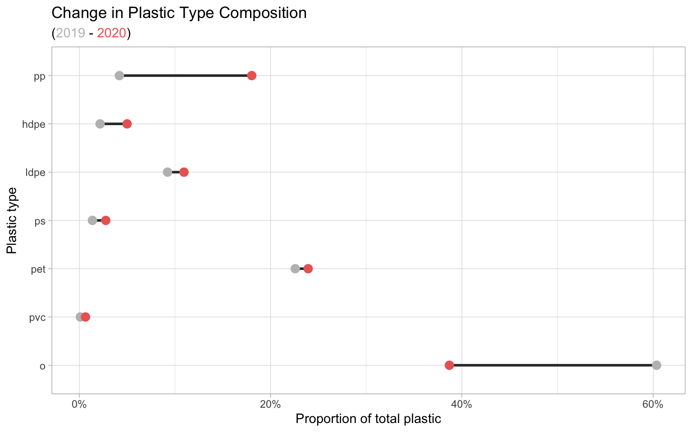
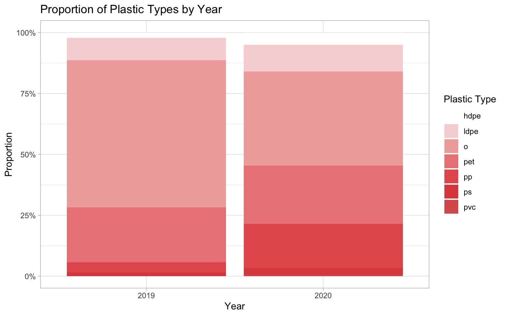
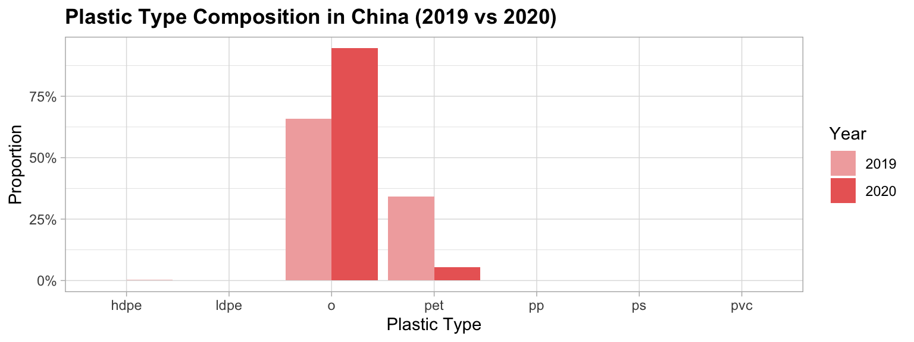

This dashboard explores global plastic waste patterns using the Break Free From Plastic brand audit data from 2019 and 2020.
RQ1: Has the composition of plastic types changed from 2019 to 2020?
RQ2: How does plastic waste differ across country income levels?
The dashboard combines Break Free From Plastic data from TidyTuesday with GDP data, REST Countries API country-level information, and country code data used to connect countries to API records.
| Proportions of Each Plastic Type | |||
| Change in proportion from 2019 to 2020 | |||
| Type | 2019 | 2020 | Change |
|---|---|---|---|
| o | 60.36% | 38.22% | −22.13% |
| pvc | 0.11% | 0.64% | 0.53% |
| pet | 22.57% | 23.64% | 1.06% |
| ps | 1.37% | 2.73% | 1.36% |
| ldpe | 9.22% | 10.81% | 1.59% |
| hdpe | 2.17% | 4.94% | 2.76% |
| pp | 4.19% | 17.81% | 13.62% |

| Year-Over-Year Increase in Plastic Use | |
| Calculated from 2020 compared with 2019 | |
| Type | YoY Increase |
|---|---|
| o | −48.88% |
| grand_total | −19.28% |
| pet | −15.47% |
| ldpe | −5.37% |
| ps | 60.66% |
| hdpe | 83.50% |
| pp | 243.12% |
| pvc | 364.36% |

Proportion of global plastic types in 2019 and 2020, showing changes in composition over time.
China was selected as a case of change because its plastic composition shifts substantially from 2019 to 2020, particularly with a large increase in the “other” plastic category and a decline in PET. These changes highlight how plastic waste composition can vary over time within a single country. Additionally, we were interested in investigating how the COVID-19 pandemic may have impacted China specifically and influenced patterns of plastic usage and waste.
